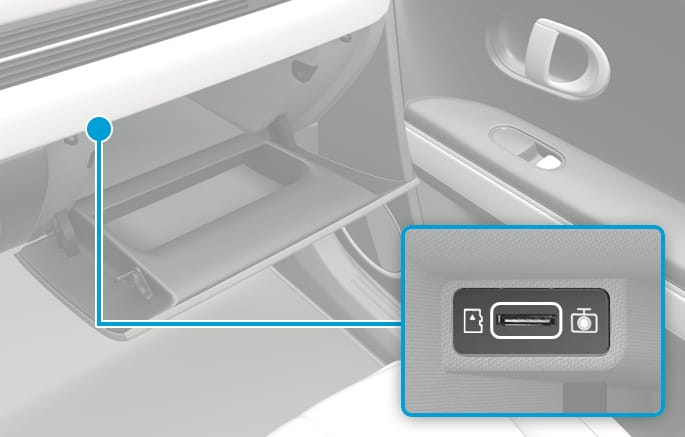

SD 메모리 제거하고 삽입하기

2C_BuiltInCamUSBPort
차량 출고 시 SD 메모리는 메모리 카드 슬롯에 삽입되어 있습니다.
-
SD 메모리 제거 및 삽입 방법을 확인한 후 메모리를 안전하게 제거하거나 삽입하십시오.
-
빌트인 캠 작동 중에 SD 메모리를 제거하는 경우 메모리에 저장된 파일 또는 파일 시스템이 손상될 수 있습니다.
-
메모리를 제거하거나 삽입할 때 메모리를 떨어뜨리지 않도록 주의하십시오. 떨어진 메모리가 차량 밖으로 튕겨져 나가거나 좌석 틈 안쪽으로 들어가는 경우 메모리를 찾기가 어려울 수 있습니다.
-
메모리 삽입 방향에 주의하십시오. 메모리를 잘못된 방향으로 삽입하는 경우 메모리 카드 슬롯 또는 메모리가 손상될 수 있습니다.
SD 메모리 제거하기
-
빌트인 캠 > 빌트인 캠 설정 > SD 메모리를 선택한 후 SD 메모리 연결 해제 항목의 연결 해제 버튼을 누르십시오.
-
메모리 카드 슬롯에 삽입된 메모리 카드를 '딸깍' 소리가 날 때까지 누르십시오.
-
슬롯 밖으로 돌출된 메모리 뒷부분을 잡고 메모리를 제거하십시오.
SD 메모리 삽입하기
메모리 카드 슬롯에 표시된 삽입 방향을 확인한 후 메모리 카드를 슬롯에 넣고 '딸깍' 소리가 날 때까지 누르십시오.
-
SD 메모리를 제거하면 녹화가 기능이 작동하지 않으며, 메모리 카드 슬롯의 조명이 깜빡입니다.
-
SD 메모리를 바르게 삽입한 후에도 정상적으로 인식되지 않는 경우, 빌트인 캠 설정 > SD 메모리 메뉴에서 SD 메모리를 초기화(exFAT)한 후 다시 시도해 주십시오.
-
잘못된 사용으로 인해 문제가 발생하는 경우 보증기간에 해당하더라도 보증수리를 제공하지 않습니다.
-
현대자동차에서 제공하는 정품 SD 메모리 이외의 제품을 사용하는 경우, 메모리의 호환성 및 정상 동작을 보증하지 않습니다.